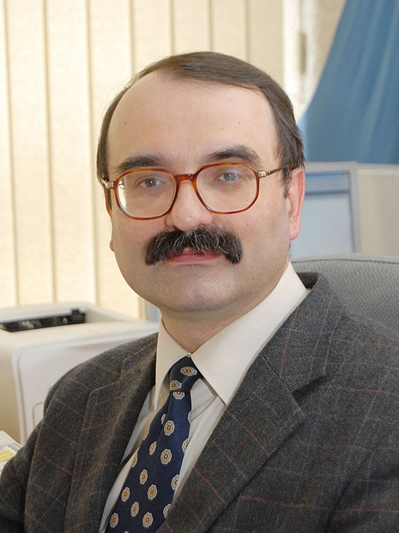
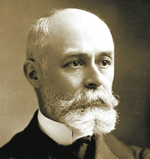
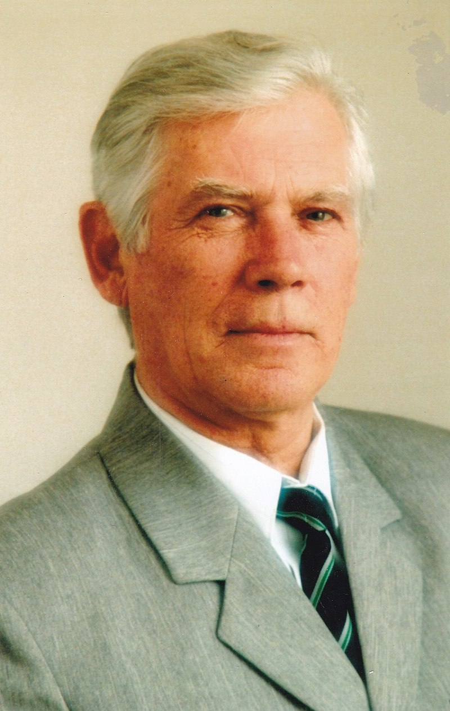

Григорчук Данііл Дмитрович
Видатні вітчизняні та закордонні вчені-фізики.

Леонід Яценко
.jpg)
Леонід Яценко(1954) — професор, доктор фізико-математичних наук, директор Інституту фізики НАНУ, Академік Національної Академії Наук України. Молодший науковий співробітник, Інститут фізики НАНУ, Київ (1979–1986), старший науковий співробітник, Інституту фізики НАНУ, Київ (1986–1997), провідний науковий співробітник, лабораторія лазерної спектроскопії, Інститут фізики НАНУ, Київ (1997 — дотепер), з 2008 року- директор Інституту фізики НАНУ. Професор-гість Університету Кайзерслаутерна, Німеччина Technische Universität Kaiserslautern (7 разів по 3 міс.) Professor Associe 2c в Університеті Діжона (Франція) (4 рази по 1 міс.), професор-гість Університету Стоні Брук, США Stony Brook University (4 рази, загалом 3 міс.).
Яків Борисович Файнберґ
.jpg)
Яків Борисович Файнберґ (1918 – 2005) — український фізик родом із Золотоноші, член-кореспондент АН УРСР (із 1964). Закінчив Харківський університет 1940 року, з 1946 — працював у Харківському фізико-технічному інституті АН УРСР, у 1949–1972 — у Харківському університеті (з 1963 — професор). Праці з електродинаміки, зокрема теорії прискорювачів елементарних частинок, хвилеводів та фізичної плазми. Співавтор відкриття «Турбуляцентне нагрівання і аномальний опір плазми», сприяло новому циклу теоретичних досліджень у фізиці плазми.
Михайло Остроградський
.jpg)
Михайло Остроградський (1801-1861) – український математик, механік і фізик. Михайло Остроградський вважається одним з провідних математиків середини XIX ст. У 2001 році ЮНЕСКО внесла Михайла Васильовича Остроградського до списку видатних математиків світу. Працював переважно у Франції та Росії. З 1828 р. професор вищих шкіл у Петербурзі. Викладач Колегії Анрі IV (Париж), професор Петербурзького університету та Морського кадетського корпусу, член Петербурзької АН (з 1830, у віці 29 років), Паризької (з 1856 р.), Римської й Туринської Академій наук. Автор 40 праць з математичного аналізу (нескінченно-малих, інтегрування раціональних функцій), математичної фізики (диференціальні рівняння поширення тепла у рідких твердих тілах), теоретичної механіки (принцип можливих переміщень, варіаційні принципи механіки, теорія удару, теорія пружності, поширення хвиль на поверхні рідини тощо), написаних переважно французькою мовою.
Максим Віталійович Стріха

Максим Віталійович Стріха (1961) — український науковець, громадський та політичний діяч, перекладач, письменник; доктор фізико-математичних наук (1997). Заступник Міністра освіти і науки України у 2008–2010 рр. та з вересня 2014 р. Головний науковий співробітник Інституту фізики напівпровідників НАН України (з 2010, з 2014 – за сумісництвом), президент Українського фізичного товариства, віце-президент АН вищої школи України (з 2010), віце-президент Асоціації українських письменників (з 2009). Член редакційних колегій «Українського фізичного журналу» (з 2010), журналу «Сенсорна електроніка і мікросистемні технології» (з 2009). Член редколегії журналу «Всесвіт» (з 2006).
Іван Пулюй

Іван Пулюй (1845-1918) — український та австро-угорський фізик і електротехнік, винахідник, організатор науки, громадський діяч, Професор Вищої технічної школи в Празі, ректор першого в Європі електротехнічного факультету. Доктор Страсбурзького університету. Державний радник з електротехніки Чехії і Моравії. Член Наукового товариства імені Шевченка. Першим зробив знімок кісток руки доньки із використанням X-променів, які через 12 років були запатентовані як «рентгенівські».
Михайло Оболенський

Михайло Оболенський (1940 р.) — український учений-фізик. Доктор фізико-математичних наук, професор. Академік АН ВШ України з 1994 р. Проходив наукове стажування в Польщі і Голландії, неодноразово працював у Греції за науковим грантом NATO. Учасник наукових проектів УНТЦ та INTAS. Отримав міжнародний сертифікат «Сучасні тенденції в галузі вивчення і застосування магнітострикції» (2000). Автор понад 150 статей, співавтор 10 авторських свідоцтв про винаходи. Підготував 5 кандидатів та 1 доктора наук. Член редколегії журналів «Физика низких температур» і «Вісник ХНУ ім. В. Каразіна» (серія «фізика»). Член двох спеціалізованих рад з присвоєння докторських і кандидатських ступенів, член вченої ради ХНУ ім. В. Каразіна.